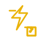
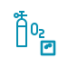

ac-source
共 796 个原创 SVG 图标。未复制稻壳受权益限制的素材，来源核验记录见 source-audit.json。
电网、母线、变压器、开关、负荷等图上建模常用电力元件。
ac-source
dc-source
busbar
transformer
circuit-breaker-open
circuit-breaker-closed
disconnector-open
disconnector-closed
load
ground
AC/DC、DC/AC、DC/DC、AC/AC 以及整流、逆变类电力电子设备。
acdc-converter
dcac-converter
dcdc-converter
acac-converter
inverter
rectifier
dcac-vertical
filter-reactor
光伏、风电、水电、火电、柴油机等电源类图标。
solar-panel
wind-turbine
hydro-generator
thermal-generator
diesel-generator
gas-turbine
grid-import
microgrid
电池、超级电容、储氢、储热、飞轮等储能设备。
battery
battery-stack
supercapacitor
flywheel
hydrogen-tank
heat-storage
compressed-air
ev-charger
锅炉、换热器、热泵、水泵、阀门、冷却塔等热力系统元件。
boiler
heat-exchanger
heat-pump
pump
valve-open
valve-closed
cooling-tower
pipe-network
电解槽、燃料电池、储氢、压缩机、加氢站等氢能系统元件。
electrolyzer
fuel-cell
hydrogen-compressor
hydrogen-station
hydrogen-pipeline
gas-mixer
表计、传感器、保护、通信、控制器等测控类图标。
meter
sensor
relay-protection
plc-controller
communication
alarm
trend-chart
terminal-node
文本、图片、容器、标注、方向、区域等通用绘图元素。
text-label
image-placeholder
container
subsystem
arrow-flow
annotation
boundary
manual-bend
互感器、避雷器、电容器、开关柜、电缆终端等一次设备图标。
current-transformer
voltage-transformer
surge-arrester
capacitor-bank
shunt-reactor
dropout-fuse
switchgear-cabinet
ring-main-unit
cable-terminal
transmission-tower
bus-coupler
feeder-bay
电机、风机、压缩机、输送线、炉窑、机械臂等工业用能负荷。
electric-motor
industrial-fan
air-compressor
conveyor
industrial-furnace
crusher
robot-arm
welding-machine
production-line
cooling-fan-tower
crane
industrial-boiler-load
服务器、网关、交换机、RTU、IED、HMI、摄像头和通信链路。
server-rack
edge-gateway
network-switch
wireless-router
rtu-terminal
ied-device
hmi-panel
historian
firewall
camera-monitor
antenna-station
cloud-platform
处理、判断、数据库、文档、延迟、连接点等通用流程图图元。
flow-process
flow-decision
flow-database
flow-terminator
flow-document
flow-delay
flow-connector
flow-offpage
flow-preparation
flow-subprocess
flow-merge
flow-manual
厂房、站房、仓库、数据中心、实验室、泵房和充电站等设施图标。
factory-building
substation-building
warehouse
data-center
laboratory
office-building
pump-room
tank-farm
charging-station-facility
parking-lot
lighting-pole
control-room
日照、云雨、风、雪、温湿度、粉尘、碳排和环保类图标。
sun-radiation
cloud-rain
wind-speed
snow

雷电lightning-weather
temperature
humidity
dust
carbon-emission
eco-leaf
water-quality
noise-monitor
看板、报表、成本、合同、日程、任务、审批、库存等运营类图标。
dashboard
report-doc
cost
contract
schedule
task-list
approval
inventory
map-operation
team-users
ticket-warning
kpi-target
常用线框、徽章、方向、注释、分组和图层类符号。
layer-stack-symbol
group-symbol
annotation-pin
direction-compass
selection-box
resize-corner
rotate-symbol
polyline-symbol
curve-symbol
polygon-symbol
grid-symbol
anchor-point
电价、交易、碳排、绿证、收益、结算和能效管理类图标。
electricity-price
market-trading
carbon-credit
green-certificate
settlement-bill
profit-analysis
energy-efficiency
demand-response
load-forecast
renewable-quota
contract-energy
carbon-meter
火灾、烟感、喷淋、急停、防护、风险和应急疏散类图标。
fire-alarm
smoke-detector
sprinkler
emergency-stop
protective-helmet
warning-risk
evacuation-route
first-aid
gas-leak
access-control-safety
shield-person
inspection-check
扳手、螺丝刀、工具箱、校验、备件、润滑、清洁和工单处理图标。
wrench-tool
screwdriver-tool
toolbox
calibration
spare-parts
lubrication
cleaning
work-order
maintenance-plan
fault-repair
bearing
torque
压力、流量、液位、振动、温湿度、气体、红外和电能质量仪表。
pressure-gauge
flow-meter
level-meter
vibration-sensor
thermal-sensor
humidity-sensor
gas-sensor
infrared-camera
power-quality
smart-meter
weather-station
signal-analyzer
取水、净水、污水、沉淀、加药、过滤、排放和水泵站图标。
water-intake
water-treatment
wastewater
sedimentation
chemical-dosing
filter-unit
sludge-tank
water-pump-station
pipe-valve
outfall
reclaimed-water
water-network
油罐、天然气、压缩机、反应釜、换热、管廊、火炬和化学品图标。
oil-tank
gas-pipeline
chemical-reactor
distillation-column
flare-stack
heat-exchanger-chemical
chemical-storage
pipe-rack
gas-compressor-skid
sampling-point
hazardous-material
loading-arm
路灯、摄像头、停车、垃圾、消防栓、井盖、基站和城市感知图标。
smart-streetlight
city-camera
smart-parking
trash-bin
fire-hydrant
manhole-cover
base-station
traffic-light
city-sensor
public-wifi
charging-city
city-dashboard
AI、算法、模型、数据流、数字孪生、边缘计算、API和自动化编排图标。
ai-chip
algorithm
model-training
data-flow
digital-twin
edge-computing
api-gateway
automation-orchestration
knowledge-graph
predictive-maintenance
data-lake
cloud-ai
牵引站、接触网、车辆、站台、再生制动和轨交控制类图标。
traction-substation
overhead-catenary
third-rail
metro-train
rail-signal
rail-switch
platform-screen-door
traction-transformer
regenerative-braking
depot-charger
rail-control-center
tunnel-ventilation
岸电、岸桥、堆场、冷链、装卸、仓储和物流通关类图标。
quay-crane
container-yard
reefer-container
shore-power
cargo-ship
port-conveyor
bulk-silo
weighbridge
forklift
logistics-warehouse
cold-chain
customs-gate
冷机、空调箱、风机盘管、冷热水环路、VAV 和楼宇能源管理图标。
chiller
air-handler
fan-coil
cooling-water-pump
chilled-water-loop
boiler-room
heat-meter-building
vav-box
air-filter
rooftop-unit
indoor-sensor
building-energy-manager
温室、灌溉、粮仓、沼气、生物质、农光互补和乡村微网图标。
greenhouse
irrigation-pump
grain-silo
biogas-digester
biomass-boiler
rural-microgrid
farm-solar
aquaculture-aerator
cold-storage-farm
agricultural-drone
soil-sensor
livestock-barn
通信站址、电源柜、整流、后备电池、光纤节点、微波链路和站点监控图标。
telecom-site
base-station-battery
tower-power
rectifier-cabinet
fiber-node
optical-terminal
microwave-link
ups-cabinet
dc-power-system
remote-radio-unit
cabinet-cooling
site-monitoring
资产台账、合同价格、绿证、结算、补贴、投资收益和风险管理图标。
asset-ledger
contract-price
carbon-credit-asset
green-certificate-asset
settlement-bill
invoice-energy
investment-return
risk-control-finance
asset-portfolio
meter-settlement
tariff-step
subsidy
测试台、示波器、分析仪、绝缘测试、继保测试和实验报告图标。
test-bench
oscilloscope
spectrum-analyzer
power-analyzer
insulation-tester
relay-tester
calibration-source
environmental-chamber
sample-bottle
microscope-lab
lab-report
test-pass
应急电源、移动变电站、抢修、防汛、指挥、备供和黑启动图标。
emergency-generator
mobile-substation
repair-vehicle
flood-barrier
command-post
satellite-phone
emergency-light
fire-pump-emergency
rescue-team
outage-map
backup-supply
black-start
矿井、破碎、输送、球磨、烧结、高炉、电炉、连铸和尾矿库图标。
mine-shaft
ore-crusher
belt-conveyor-mining
ball-mill
flotation-cell
sintering-machine
blast-furnace
electric-arc-furnace
continuous-caster
rolling-mill
tailings-pond
dedusting-station
海上风电、海缆、升压站、平台、浮式基础、潮汐和海水制氢图标。
offshore-wind
subsea-cable
offshore-substation
jacket-foundation
floating-foundation
tidal-generator
wave-energy
offshore-platform
marine-battery
shore-hydrogen
navigation-buoy
subsea-sensor
跟踪支架、汇流箱、组串逆变、储能舱、氢储能和新能源预测图标。
solar-tracker
pv-combiner-box
string-inverter
central-inverter
wind-yaw-system
wind-pitch-system
battery-container
pcs-cabinet
bms-controller
ems-controller
renewable-forecast
hybrid-renewable
工单、巡检、缺陷、告警压缩、知识库、移动作业和远程专家图标。
mobile-work-order
inspection-route-digital
defect-library
alarm-compression
knowledge-base
remote-expert
ar-maintenance
asset-tag
iot-diagnosis
root-cause
digital-ticket
operation-score
数据目录、血缘、质量、主数据、脱敏、权限、审计和归档图标。
data-catalog
data-lineage
data-quality
master-data
data-desensitization
data-permission
data-audit
data-archive
metadata
data-standard
data-service
data-security
户用光伏、家庭储能、充电车位、商超冷链、园区能耗和楼宇账单图标。
home-solar
home-battery
ev-parking-space
shop-energy
supermarket-cold-chain
campus-energy
building-bill
smart-home-meter
heat-pump-home
commercial-kitchen
mall-dashboard
tenant-metering
门极驱动、PWM、滤波、直流母线、软启动、SVG/APF 和保护控制图标。
gate-driver
pwm-control
dc-bus
lcl-filter
soft-starter
static-var-generator
active-power-filter
harmonic-monitor
dc-breaker
precharge-circuit
isolation-monitor
modulation-controller
许可证、审计、策略、权限、加密、隐私、风险矩阵和整改闭环图标。
license-certificate
audit-trail
policy-rule
permission-role
encryption-key
privacy-data
risk-matrix
control-measure
rectification-loop
compliance-report
approval-flow
evidence-package
校园微网、楼宇分项、宿舍负荷、教室照明、冷热站和校园充电图标。
campus-microgrid
teaching-building-energy
dormitory-load
classroom-lighting
library-energy
campus-central-plant
campus-ev-charger
campus-carbon
smart-classroom
campus-water-meter
campus-heat-meter
campus-energy-dashboard
实验楼、通风柜、气瓶、危化品柜、实验排风、洁净室和实验电源图标。
research-building
fume-hood
gas-cylinder
chemical-cabinet
lab-exhaust
clean-room
lab-ups
precision-aircon
lab-power-panel
pure-water-system
lab-waste
instrument-platform
医院、学校、图书馆、体育馆、食堂、停车、公共厕所和市政服务图标。
hospital-facility
school-facility
library-facility
gymnasium
canteen
public-parking
public-toilet
service-hall
public-elevator
municipal-water
municipal-heating
public-shelter
课程、考试、实训台、仿真、课件、在线学习、证书和实验教学图标。
course
exam
training-bench
simulation
courseware
online-learning
certificate-training
experiment-teaching
student-group
teacher-console
virtual-lab
knowledge-map
电水气热分表、预付费、账单、结算、费用分摊和异常用量图标。
electric-submeter
water-submeter
gas-submeter
heat-submeter
prepaid-meter
utility-bill
cost-allocation
usage-anomaly
meter-reading
settlement-cycle
tariff-plan
billing-audit
碳核算、绿电、碳汇、减排项目、能效诊断、低碳活动和碳中和路径图标。
carbon-accounting-campus
green-power-campus
carbon-sink-campus
emission-reduction-project
energy-efficiency-diagnosis
low-carbon-activity
carbon-neutral-roadmap
green-certificate-campus
carbon-budget
carbon-offset
low-carbon-score
sustainability-report
变电、配电、继电保护、馈线自动化、电能质量和电网控制图标。
substation-bay
distribution-feeder
recloser
sectionalizer
feeder-terminal-unit
distribution-terminal-unit
relay-panel
fault-indicator
power-quality-monitor
phasor-measurement-unit
tap-changer
reactive-compensation
发电机组、励磁、调速、厂用电、并网点、AGC、AVC、机组监控和发电侧计量图标。
generator-set
synchronous-generator
generator-terminal
step-up-transformer
unit-auxiliary-power
excitation-cabinet
governor-cabinet
unit-control-panel
grid-connection-point
agc-controller
avc-controller
generation-metering
输电线路、铁塔、导线、绝缘子、避雷器、OPGW、线路保护、巡检和高压直流图标。
transmission-tower
overhead-line
conductor-bundle
insulator-string
line-surge-arrester
opgw-fiber
line-distance-protection
line-differential-protection
series-compensation-bank
tower-grounding
line-patrol-drone
hvdc-pole
主变、母线、断路器、隔离开关、接地刀闸、互感器、避雷器、间隔和站控层图标。
main-transformer
busbar-section
circuit-breaker-bay
disconnect-switch-bay
grounding-switch-bay
current-transformer
voltage-transformer
substation-surge-arrester
relay-protection-room
station-control-layer
bay-control-unit
substation-dc-system
环网柜、开闭所、箱变、柱上开关、配变、分支箱、电缆分接箱、台区和配网自动化图标。
ring-main-unit
switching-station
package-substation
pole-mounted-switch
distribution-transformer
cable-branch-box
feeder-automation
distribution-area
low-voltage-cabinet
reactive-power-box
smart-distribution-terminal
fault-location-terminal
用户变、进线柜、负荷、计量、充电桩、楼宇、工厂、需求响应和能效管理图标。
customer-substation
incoming-cabinet
load-center
smart-meter
metering-box
ev-charging-pile
building-load
industrial-load
residential-load
demand-response
energy-efficiency-management
load-forecast
风机、叶片、塔筒、偏航、变桨、集电线路、测风塔和风电场控制图标。
wind-turbine-unit
wind-blade
wind-tower
wind-nacelle
wind-yaw-drive
wind-pitch-drive
wind-gearbox
wind-generator-unit
wind-converter
wind-collector-line
met-mast
wind-farm-controller
大坝、进水口、压力钢管、水轮机、调速器、励磁、尾水和抽蓄图标。
hydro-dam
hydro-intake-gate
penstock
hydraulic-turbine
hydro-generator-unit
hydro-governor
excitation-system
spillway
tailrace
reservoir
pumped-storage
hydro-control-room
锅炉、汽轮机、发电机、冷凝器、给水泵、煤磨、脱硫脱硝和烟囱图标。
coal-boiler
steam-turbine
thermal-generator-unit
condenser
feedwater-pump
coal-mill
air-preheater
electrostatic-precipitator
desulfurization
denitration
chimney-stack
chp-extraction
组件、组串、汇流箱、逆变器、跟踪支架、辐照传感器和光伏电站图标。
pv-module
pv-string
pv-combiner
pv-dc-cable
mppt-controller
string-pv-inverter
central-pv-inverter
pv-tracker
irradiance-sensor
pv-cleaning-robot
pv-fault-diagnosis
pv-plant
电解槽、整流电源、压缩、纯化、干燥、储氢、加氢和燃料电池图标。
alkaline-electrolyzer
pem-electrolyzer
electrolyzer-stack
hydrogen-rectifier
hydrogen-purifier
hydrogen-dryer
hydrogen-buffer-tank
hydrogen-compressor-skid
hydrogen-storage-bank
hydrogen-dispenser
fuel-cell-stack
hydrogen-leak-sensor
电池舱、电池架、PCS、BMS、EMS、热管理、消防、SOC、飞轮和压缩空气储能图标。
bess-container
battery-rack
battery-module
pcs-unit
bms-unit
ems-unit
storage-transformer
storage-thermal-management
storage-fire-protection
state-of-charge
flywheel-storage-unit
compressed-air-storage-unit
海上风电、升压站、集电海缆、偏航变桨、覆冰、振动、尾流和功率曲线图标。
offshore-wind-turbine
wind-farm-substation
wind-collector-cable
submarine-export-cable
blade-icing-sensor
tower-vibration-sensor
nacelle-control-cabinet
pitch-backup-battery
yaw-bearing-monitor
wind-power-forecast
wake-control
power-curve-analysis
双面组件、优化器、组串监测、直流拉弧、PID、跟踪控制、清洗和汇流监测图标。
bifacial-pv-module
pv-optimizer
string-monitoring-unit
dc-arc-fault-detector
anti-pid-device
tracker-controller
pv-weather-station
soiling-sensor
iv-curve-tester
pv-combiner-monitor
pv-cleaning-schedule
pv-plant-pr
制氢、纯化、压缩、储运、加氢、燃料电池、氢安全和氢能控制图标。
electrolyzer-power-supply
hydrogen-water-treatment
hydrogen-gas-liquid-separator

氢氧分离hydrogen-oxygen-separator
hydrogen-cooling-loop
hydrogen-pressure-regulator
hydrogen-tube-trailer
liquid-hydrogen-tank
hydrogen-refueling-station
fuel-cell-inverter
hydrogen-safety-shutdown
hydrogen-energy-management
电芯、簇、预制舱、均衡、绝缘监测、消防排风、液冷、SOC/SOH和充放电策略图标。
battery-cell
battery-cluster
battery-container-hvac
battery-liquid-cooling
battery-equalization
insulation-monitoring-device
storage-smoke-detector
storage-exhaust-fan
battery-soh
charge-discharge-strategy
black-start-storage
virtual-power-plant-storage
整流、逆变、变流、SVG、STATCOM、MMC、柔直、DC/DC和电能质量治理图标。
rectifier-bridge
inverter-bridge
dc-dc-converter
ac-dc-converter
dc-ac-converter
ac-ac-converter
svg-compensator
statcom-device
mmc-valve
flexible-dc-station
active-power-filter
solid-state-transformer
冷站、冷机、冷冻水、冷却水、冷却塔、冰蓄冷、冷量表和冷负荷图标。
cooling-station
electric-chiller
absorption-chiller
chilled-water-pump
cooling-water-pump
cooling-tower
ice-storage-tank
cold-thermal-storage
cooling-meter
air-handling-unit
fan-coil-unit
cooling-load
燃气门站、调压、计量、管线、压缩、储气、燃机、燃气锅炉和气体检测图标。
gas-gate-station
gas-regulator-station
gas-metering-station
gas-pipeline
gas-compressor
gas-storage-tank
lng-tank
cng-station
gas-turbine
gas-boiler
gas-leak-detector
gas-shutoff-valve
能源站、冷热电联供、电制冷、电锅炉、热泵、燃气、储能、多能流和能量枢纽图标。
integrated-energy-station
cchp-system
energy-hub
multi-energy-flow
electric-to-heat
electric-to-cold
gas-to-power
waste-heat-recovery
heat-pump-system
thermal-electric-storage
integrated-energy-ems
carbon-energy-dispatch
热源、换热站、循环泵、板换、蓄热罐、热网、阀室、热表和热泵图标。
heat-source-station
heat-exchange-station
district-heating-network
heating-circulation-pump
plate-heat-exchanger
hot-water-tank
valve-chamber
radiator-terminal
floor-heating
heat-meter
air-source-heat-pump
thermal-storage-tank
气象站、测风、辐照、温湿度、雨量、气压、雪深、能见度和预报图标。
meteorological-station
anemometer
wind-vane
pyranometer
temperature-humidity-sensor
rain-gauge
barometer
snow-depth-sensor
visibility-meter
lightning-detector
weather-forecast
icing-warning
SCADA、RTU、PLC、IED、网关、交换机、5G、光纤、遥测遥信和控制中心图标。
scada-system
rtu-control-unit
plc-control-unit
ied-protection-unit
industrial-gateway
ethernet-switch
fiber-optic-ring
fiveg-router
telemetry
remote-signaling
remote-control
dispatch-control-center